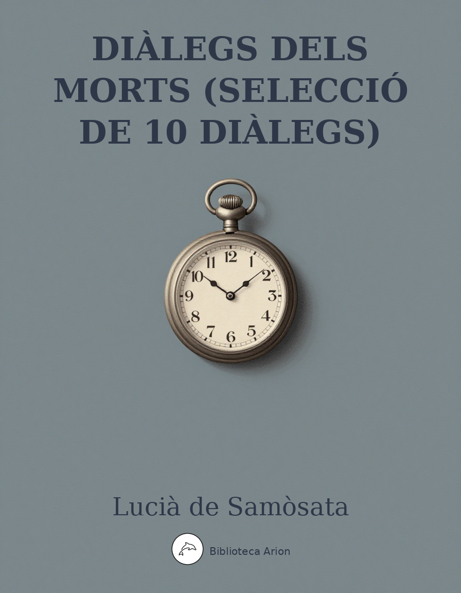

Diàlegs dels Morts (selecció de 10 diàlegs)
Νεκρικοὶ Διάλογοι
Selecció de 10 diàlegs satírics ambientats al món dels morts, on personatges mitològics, filòsofs i conqueridors debaten sobre la vanitat de la vida terrenal.
Selecció de 10 diàlegs. Text original en grec antic. Font: Wikisource (el.wikisource.org)
Διάλογος 1: Διογένους καὶ Ἀλεξάνδρου
;Διογένης [1] τί τοῦτο, ὦ Ἀλέξανδρε; καὶ συ τέθνηκας ὥσπερ καὶ ἡμεῖς ἅπαντες;
;Ἀλέξανδρος ὁρᾷς, ὦ Διόγενες· οὐ παράδοξον δέ, εἰ ἄνθρωπος ὢν ἀπέθανον.
;Διογένης οὐκοῦν ὁ Ἄμμων ἐψεύδετο λέγων ἑαυτοῦ σε εἶναι, σὺ δὲ Φιλίππου ἄρα ἦσθα;
;Ἀλέξανδρος Φιλίππου δηλαδή· οὐ γὰρ ἂν ἐτεθνήκειν Ἄμμωνος ὤν.
;Διογένης καὶ μὴν καὶ περὶ τῆς Ὀλυμπιάδος ὅμοια ἐλέγετο, δράκοντα ὁμιλεῖν αὐτῇ καὶ βλέπεσθαι ἐν τῇ εὐνῇ, εἶτα οὕτω σε τεχθῆναι, τὸν δὲ Φίλιππον ἐξηπατῆσθαι οἰόμενον παρ᾽ ἑαυτοῦ σε εἶναι.
;Ἀλέξανδρος κἀγὼ ταῦτα ἤκουον ὥσπερ σύ, νῦν δὲ ὁρῶ, ὅτι οὐδὲν ὑγιὲς οὔτε ἡ μήτηρ οὔτε οἱ τῶν Ἀμμωνίων προφῆται ἔλεγον.
;Διογένης ἀλλὰ τὸ ψεῦδος αὐτῶν οὐκ ἄχρηστόν σοι, ὦ Ἀλέξανδρε, πρὸς τὰ πράγματα ἐγένετο· πολλοὶ γὰρ ὑπέπτησσον θεὸν εἶναί σε νομίζοντες. [2] ἀτὰρ εἰπέ μοι, τίνι τὴν τοσαύτην ἀρχὴν καταλέλοιπας;
;Ἀλέξανδρος οὐκ οἶδα, ὦ Διόνενες· οὐ γὰρ ἔφθασα ἐπισκῆψαί [p. 161] τι περὶ αὐτῆς ἢ τοῦτο μόνον, ὅτι ἀποθνήσκων Περδίκκᾳ τὸν δακτύλιον ἐπέδωκα. πλὴν ἀλλὰ τί γελᾷς, ὦ Διόγενες;
;Διογένης τί γὰρ ἄλλο ἢ ἀνεμνήσθην οἷα ἐποίει ἡ Ἑλλάς, ἄρτι σε παρειληφότα τὴν ἀρχὴν κολακεύοντες καὶ προστάτην αἱρούμενοι καὶ στρατηγὸν ἐπὶ τοὺς βαρβάρους, ἔνιοι δὲ καὶ τοῖς δώδεκα θεοῖς προστιθέντες καὶ οἰκοδομοῦντές σοι νεὼς καὶ θύοντες ὡς δράκοντος υἱῷ. [3] ἀλλ᾽ εἰπέ μοι, ποῦ σε οἱ Μακεδόνες ἔθαψαν;
;Ἀλέξανδρος ἔτι ἐν Βαβυλῶνι κεῖμαι τριακοστὴν ταύτην ἡμέραν, ὑπισχνεῖται δὲ Πτολεμαῖος ὁ ὑπασπιστής, ἤν ποτε ἀγάγῃ σχολὴν ἀπὸ τῶν θορύβων τῶν ἐν ποσίν, ἐς Αἴγυπτον ἀπαγαγὼν θάψειν ἐκεῖ, ὡς γενοίμην εἷς τῶν Αἰγυπτίων θεῶν.
;Διογένης μὴ γελάσω οὖν, ὦ Ἀλέξανδρε, ὁρῶν καὶ ἐν ᾄδου ἔτι σε μωραίνοντα καὶ ἐλπίζοντα Ἄνουβιν ἢ Ὄσιριν γενήσεσθαι; πλὴν ἀλλὰ ταῦτα μέν, ὦ θειότατε, μὴ ἐλπίσῃς· οὐ γὰρ θέμις ἀνελθεῖν τινα τῶν ἅπαξ διαπλευσάντων τὴν λίμνην καὶ ἐς τὸ εἴσω τοῦ στομίου παρελθόντων· οὐ γὰρ ἀμελὴς ὁ Αἰακὸς οὐδ᾽ ὁ Κέρβερος εὐκαταφρόνητος. [4] ἐκεῖνο δέ γε ἡδέως ἂν μάθοιμι παρὰ σοῦ, πῶς φέρεις, ὁπόταν ἐννοήσῃς, ὅσην εὐδαιμονίαν ὑπὲρ γῆς ἀπολιπὼν ἀφῖξαι, σωματοφύλακας καὶ ὑπασπιστὰς καὶ σατράπας καὶ χρυσὸν τοσοῦτον καὶ ἔθνη προσκυνοῦντα καὶ Βαβυλῶνα καὶ Βάκτρα καὶ τὰ μεγάλα θηρία καὶ τιμὴν καὶ δόξαν καὶ τὸ ἐπίσημον εἶναι ἐξελαύνοντα διαδεδεμένον ταινίᾳ λευκῇ τὴν κεφαλὴν πορφυρίδα ἐμπεπορπημένον. οὐ λυπεῖ ταῦτά σε ὑπὸ τὴν μνήμην ἰόντα; τί δακρύεις, ὦ μάταιε; οὐδὲ ταῦτά σε ὁ σοφὸς Ἀριστοτέλης ἐπαίδευσε μὴ οἴεσθαι βέβαια εἶναι τὰ παρὰ τῆς τύχης;
;Ἀλέξανδρος [5] ὁ σοφός; ἁπάντων ἐκεῖνος κολάκων ἐπιτριπτότατος [p. 162] ὤν. ἐμὲ μόνον ἔασον τὰ Ἀριστοτέλους εἰδέναι, ὅσα μὲν ᾔτησε παρ᾽ ἐμοῦ, οἷα δὲ ἐπέστελλεν, ὡς δὲ κατεχρῆτό μου τῇ περὶ παιδείαν φιλοτιμίᾳ θωπεύων καὶ ἐπαινῶν ἄρτι μὲν πρὸς τὸ κάλλος, ὡς καὶ τοῦτο μέρος ὂν τἀγαθοῦ, ἄρτι δὲ ἐς τὰς πράξεις καὶ τὸν πλοῦτον. καὶ γὰρ αὖ καὶ τοῦτο ἀγαθὸν ἡγεῖτο εἶναι, ὡς μὴ αἰσχύνοιτο καὶ αὑτὸς λαμβάνων· γόης, ὦ Διόγενες, ἄνθρωπος καὶ τεχνίτης. πλὴν ἀλλὰ τοῦτό γε ἀπολέλαυκα αὐτοῦ τῆς σοφίας, τὸ λυπεῖσθαι ὡς ἐπὶ μεγίστοις ἀγαθοῖς ἐκείνοις. ἃ κατηριθμήσω μικρῷ γε ἔμπροσθεν.
;Διογένης [6] ἀλλ᾽ οἶσθα ὃ δράσεις; ἄκος γάρ σοι τῆς λύπης ὑποθήσομαι. ἐπεὶ ἐνταῦθά γε ἐλλέβορος οὐ φύε ται, σὺ δὲ κἂν τὸ Λήθης ὕδωρ χανδὸν ἐπισπασάμενος πίε καὶ αὖθις πίε καὶ πολλάκις· οὕτως γὰρ παύσῃ ἐπὶ τοῖς Ἀριστοτέλους ἀγαθοῖς ἀνιώμενος. καὶ γὰρ Κλεῖτον ἐκεῖνον ὁρῶ καὶ Καλλισθένην καὶ ἄλλους πολλοὺς ἐπὶ σὲ ὁρμῶντας, ὡς διασπάσαιντο καὶ ἀμύναιντό σε ὧν ἔδρασας αὐτούς. ὥστε τὴν ἑτέραν σὺ ταύτην βάδιζε καὶ πῖνε πολλάκις, ὡς ἔφην.
Διάλογος 2: Χάρωνος καὶ Μενίππου
;Χάρων [1] ἀπόδος, ὦ κατάρατε, τὰ πορθμεῖα.
;Μένιππος βόα, εἰ τοῦτό σοι, ὦ Χάρων, ἥδιον.
;Χάρων ἀπόδος, φημί, ἀνθ᾽ ὧν σε διεπορθμεύσαμεν.
;Μένιππος οὐκ ἂν λάβοις παρὰ τοῦ μὴ ἔχοντος.
;Χάρων ἔστι δέ τις ὀβολὸν μὴ ἔχων;
;Μένιππος εἰ μὲν καὶ ἄλλος τις οὐκ οἶδα, ἐγὼ δ᾽ οὐκ ἔχω.
;Χάρων καὶ μὴν ἄγξω σε νὴ τὸν Πλούτωνα, ὦ μιαρέ, ἢν μὴ ἀποδῷς.
;Μένιππος κἀγὼ τῷ ξύλῳ σου πατάξας διαλύσω τὸ κρανίον.
;Χάρων μάτην οὖν ἔσῃ πεπλευκὼς τοσοῦτον πλοῦν.
;Μένιππος ὁ Ἑρμῆς ὑπὲρ ἐμοῦ σοι ἀποδότω, ὅς με παρέδωκέ σοι.
;Ἑρμῆς [2] νὴ Δί᾽ ὠνάμην γε, εἰ μέλλω καὶ ὑπερεκτίνειν τῶν νεκρῶν.
;Χάρων οὐκ ἀποστήσομαί σου.
;Μένιππος τούτου γε ἕνεκα καὶ νεωλκήσας τὸ πορθμεῖον παράμενε: πλὴν ἀλλ᾽ ὅ γε μὴ ἔχω, πῶς ἂν λάβοις;
;Χάρων σὺ δ᾽ οὐκ ᾔδεις ὡς κομίζεσθαι δέον;
;Μένιππος Ἤιδειν μέν, οὐκ εἶχον δέ. τί οὖν; ἐχρῆν διὰ τοῦτο μὴ ἀποθανεῖν;
;Χάρων μόνος οὖν αὐχήσεις προῖκα πεπλευκέναι;
;Μένιππος οὐ προῖκα, ὦ βέλτιστε· καὶ γὰρ ἤντλησα καὶ τῆς κώπης συνεπελαβόμην καὶ οὐκ ἔκλαον μόνος τῶν ἄλλων ἐπιβατῶν.
;Χάρων οὐδὲν ταῦτα πρὸς πορθμέα: τὸν ὀβολὸν ἀποδοῦναί σε δεῖ: οὐ θέμις ἄλλως γενέσθαι.
;Μένιππος [3] οὐκοῦν ἄπαγέ με αὖθις ἐς τὸν βίον. [p. 177]
;Χάρων χάριεν λέγεις, ἵνα καὶ πληγὰς ἐπὶ τούτῳ παρα τοῦ Αἰακοῦ προσλάβω.
;Μένιππος μὴ ἐνόχλει οὖν.
;Χάρων δεῖξον τί ἐν τῇ πήρᾳ ἔχεις.
;Μένιππος θέρμους, εἰ θέλεις, καὶ τῆς Ἑκάτης τὸ δεῖπνον.
;Χάρων πόθεν τοῦτον ἡμῖν, ὦ Ἑρμῆ, τὸν κύνα ἤγαγες; οἷα δὲ καὶ ἐλάλει παρὰ τὸν πλοῦν τῶν ἐπιβατῶν ἁπάντων καταγελῶν καὶ ἐπισκώπτων καὶ μόνος ᾄδων οἰμωζόντων ἐκείνων.
;Ἑρμῆς ἀγνοεῖς, ὦ Χάρων, ὅντινα ἄνδρα διεπόρ θμευσας; ἐλεύθερον ἀκριβῶς, κοὐδενὸς αὐτῷ μέλει. οὗτός ἐστιν ὁ Μένιππος.
;Χάρων καὶ μὴν ἄν σε λάβω ποτέ —
;Μένιππος ἂν λάβῃς, ὦ βέλτιστε· δὶς δὲ οὐκ ἂν λάβοις.
Διάλογος 3: Μενίππου καὶ Ἑρμοῦ
;Μένιππος [1] ποῦ δὲ οἱ καλοί εἰσιν ἢ αἱ καλαί, Ἑρμῆ; ξενάγησόν με νέηλυν ὄντα.
;Ἑρμῆς οὐ σχολή μοι, ὦ Μένιππε: πλὴν κατ᾽ ἐκεῖνο ἀπόβλεψον, ἐπὶ τὰ δεξιά, ἔνθα ὁ Ὑάκινθός τέ ἐστι καὶ [p. 170] Νάρκισσος καὶ Νιρεὺς καὶ Ἀχιλλεὺς καὶ Τυρὼ καὶ Ἑλένη καὶ Λήδα καὶ ὅλως τὰ ἀρχαῖα πάντα κάλλη.
;Μένιππος ὀστᾶ μόνα ὁρῶ καὶ κρανία τῶν σαρκῶν γυμνά, ὅμοια τὰ πολλά.
;Ἑρμῆς καὶ μὴν ἐκεῖνά ἐστιν ἃ πάντες οἱ ποιηταὶ θαυμάζουσι τὰ ὀστᾶ, ὧν σὺ ἔοικας καταφρονεῖν.
;Μένιππος ὅμως τὴν Ἑλένην μοι δεῖξον· οὐ γὰρ ἂν διαγνοίην ἔγωγε.
;Ἑρμῆς τουτὶ τὸ κρανίον ἡ Ἑλένη ἐστίν.
;Μένιππος [2] εἶτα διὰ τοῦτο αἱ χίλιαι νῆες ἐπληρώθησαν ἐξ ἁπάσης τῆς Ἑλλάδος καὶ τοσοῦτοι ἔπεσον Ἕλληνές τε καὶ βάρβαροι καὶ τοσαῦται πόλεις ἀνάστατοι γεγόνασιν;
;Ἑρμῆς ἀλλ᾽ οὐκ εἶδες, ὦ Μένιππε, ζῶσαν τὴν γυναῖκα· ἔφης γὰρ ἂν καὶ σὺ ἀνεμέσητον εἶναι τοιῇδ᾽ ἀμφὶ γυναικὶ πολὺν χρόνον ἄλγεα πάσχειν· ἐπεὶ καὶ τὰ ἄνθη ξηρὰ ὄντα εἴ τις βλέποι ἀποβεβληκότα τὴν βαφήν, ἄμορφα δῆλον ὅτι αὐτῷ δόξει, ὅτε μέντοι ἀνθεῖ καὶ ἔχει τὴν χρόαν, κάλλιστα ἐστιν.
;Μένιππος οὐκοῦν τοῦτο, ὦ Ἑρμῆ, θαυμάζω, εἰ μὴ συνίεσαν οἱ Ἀχαιοὶ περὶ πράγματος οὕτως ὀλιγοχρονίου καὶ ῥᾳδίως ἀπανθοῦντος πονοῦντες.
;Ἑρμῆς οὐ σχολή μοι, ὦ Μένιππε, συμφιλοσοφεῖν σοι. ὥστε σὺ μὲν ἐπιλεξάμενος τόπον, ἔνθα ἂν ἐθέλῃς, κεῖσο καταβαλὼν σεαυτόν, ἐγὼ δὲ τοὺς ἄλλους νεκροὺς ἤδη μετελεύσομαι.
Διάλογος 4: Διογένους καὶ Μαυσώλου
;Διογένης [1] ὦ Κάρ, ἐπὶ τίνι μέγα φρονεῖς καὶ πάντων ἡμῶν προτιμᾶσθαι ἀξιοῖς;
;Μαύσωλος καὶ ἐπὶ τῇ βασιλείᾳ μέν, ὦ Σινωπεῦ, ὃς ἐβασίλευσα Καρίας μὲν ἁπάσης, ἦρξα δὲ καὶ Λυδῶν ἐνίων καὶ νήσους δέ τινας ὑπηγαγόμην καὶ ἄχρι Μιλήτου ἐπέβην τὰ πολλὰ τῆς Ἰωνίας καταστρεφόμενος· καὶ καλὸς ἦν καὶ μέγας καὶ ἐν πολέμοις καρτερός· τὸ δὲ μέγιστον, ὅτι ἐν Ἁλικαρνασσῷ μνῆμα παμμέγεθες ἔχω ἐπικείμενον, ἡλίκον οὐκ ἄλλος νεκρός, ἀλλ᾽ οὐδὲ οὕτως ἐς κάλλος ἐξησκημένον, ἵππων καὶ ἀνδρῶν ἐς τὸ ἀκριβέστατον εἰκασμένων λίθου τοῦ καλλίστου, οἷον οὐδὲ νεὼν εὕροι τις ἂν ῥᾳδίως. οὐ δοκῶ σοι δικαίως ἐπὶ τούτοις μέγα φρονεῖν;
;Διογένης [2] ἐπὶ τῇ βασιλείᾳ φὴς καὶ τῷ κάλλει καὶ τῷ βάρει τοῦ τάφου;
;Μαύσωλος νὴ Δί᾽ ἐπὶ τούτοις.
;Διογένης ἀλλ᾽, ὦ καλὲ Μαύσωλε, οὔτε ἡ ἰσχὺς ἐκείνη ἔτι σοι οὔτε ἡ μορφὴ πάρεστιν· εἰ γοῦν τινα ἑλοίμεθα δικαστὴν εὐμορφίας πέρι, οὐκ ἔχω εἰπεῖν, τίνος ἕνεκα τὸ σὸν κρανίον προτιμηθείη ἂν τοῦ ἐμοῦ· φαλακρὰ γὰρ ἄμφω καὶ γυμνά, καὶ τοὺς ὀδόντας ὁμοίως προφαίνομεν καὶ τοὺς ὀφθαλμοὺς ἀφῃρήμεθα καὶ τὰς ῥῖνας ἀποσεσιμώμεθα. ὁ δὲ τάφος καὶ οἱ πολυτελεῖς ἐκεῖνοι λίθοι Ἁλικαρνασσεῦσι μὲν ἴσως εἶεν ἐπιδείκνυσθαι καὶ φιλοτιμεῖσθαι πρὸς τοὺς ξένους, ὡς δή τι μέγα οἰκοδόμημα αὐτοῖς ἐστι· σὺ δέ, ὦ βέλτιστε, οὐχ ὁρῶ ὅ τι ἀπολαύεις αὐτοῦ, πλὴν εἰ μὴ τοῦτο φης, ὅτι μᾶλλον ἡμῶν ἀχθοφορεῖς ὑπὸ τηλικούτοις λίθοις πιεζόμενος. [p. 180]
;Μαύσωλος [3] ἀνόνητα οὖν μοι ἐκεῖνα πάντα καὶ ἰσότιμος ἔσται Μαύσωλος καὶ Διογένης;
;Διογένης οὐκ ἰσότιμος, ὦ γενναιότατε, οὐ γάρ· Μαύσωλος μὲν γὰρ οἰμώξεται μεμνημένος τῶν ὑπὲρ γῆς, ἐν οἷς εὐδαιμονεῖν ᾤετο, Διογένης δὲ καταγελάσεται αὐτοῦ. καὶ τάφον ὁ μὲν ἐν Ἁλικαρνασσῷ ἐρεῖ ἑαυτοῦ ὑπὸ Ἀρτεμισίας τῆς γυναικὸς καὶ ἀδελφῆς κατεσκευασμένον, ὁ Διογένης δὲ τοῦ μὲν σώματος εἰ καί τινα τάφον ἔχει οὐκ οἶδεν· οὐδὲ γὰρ ἔμελεν αὐτῷ τούτου· λόγον δὲ τοῖς ἀρίστοις περὶ αὑτοῦ καταλέλοιπεν ἀνδρὸς βίον βεβιωκὼς ὑψηλότερον, ὦ Καρῶν ἀνδραποδωδέστατε, τοῦ σοῦ μνήματος καὶ ἐν βεβαιοτέρῳ χωρίῳ κατεσκευασμένον.
Διάλογος 5: Μενίππου καὶ Ταντάλου
;Μένιππος [1] τί κλάεις, ὦ Τάνταλε; ἢ τί σεαυτὸν ὀδύρῃ ἐπὶ τῇ λίμνῃ ἑστώς;
;Τάνταλος ὅτι, ὦ Μένιππε, ἀπόλωλα ὑπὸ τοῦ δίψους.
;Μένιππος οὕτως ἀργὸς εἶ, ὡς μὴ ἐπικύψας πιεῖν ἢ καὶ νη Δί᾽ αρυσάμενος κοίλῃ τῇ χειρί;
;Τάνταλος οὐδὲν ὄφελος, εἰ ἐπικύψαιμι· φεύγει γὰρ τὸ ὕδωρ, ἐπειδὰν προσιόντα αἴσθηταί με· ἢν δέ ποτε καὶ ἀρύσωμαι καὶ προσενέγκω τῷ στόματι, οὐ φθάνω βρέξας ἄκρον τὸ χεῖλος, καὶ διὰ τῶν δακτύλων διαρρυὲν οὐκ οἶδ᾽ ὅπως αὖθις ἀπολείπει ξηρὰν τὴν χεῖρά μοι. [p. 169]
;Μένιππος τεράστιόν τι πάσχεις, ὦ Τάνταλε. ἀτὰρ εἰπέ μοι, τί δαὶ καὶ δέῃ τοῦ πιεῖν; οὐ γὰρ σῶμα ἔχεις, ἀλλ᾽ ἐκεῖνο μὲν ἐν Λυδίᾳ που τέθαπται, ὅπερ καὶ πεινῆν καὶ διψῆν ἐδύνατο, σὺ δὲ ἡ ψυχὴ πῶς ἂν ἔτι ἢ διψῴης ἢ πίνοις;
;Τάνταλος τοῦτ᾽ αὐτὸ ἡ κόλασίς ἐστι, τὸ διψῆν τὴν ψυχὴν ὡς σῶμα οὖσαν.
;Μένιππος [2] ἀλλὰ τοῦτο μὲν οὕτως πιστεύσομεν, ἐπεὶ φὴς κολάζεσθαι τῷ δίψει. τί δ᾽ οὖν σοι τὸ δεινὸν ἔσται; ἢ δέδιας μὴ ἐνδείᾳ τοῦ ποτοῦ ἀποθάνῃς; οὐχ ὁρῶ γὰρ ἄλλον ᾄδην μετὰ τοῦτον ἢ θάνατον ἐντεῦθεν εἰς ἕτερον τόπον.
;Τάνταλος ὀρθῶς μὲν λέγεις· καὶ τοῦτο δ᾽ οὖν μέρος τῆς καταδίκης, τὸ ἐπιθυμεῖν πιεῖν μηδὲν δεόμενον.
;Μένιππος ληρεῖς, ὦ Τάνταλε, καὶ ὡς ἀληθῶς ποτοῦ δεῖσθαι δοκεῖς, ἀκράτου γε ἐλλεβόρου νὴ Δία, ὅστις τοὐναντίον τοῖς ὑπὸ τῶν λυττώντων κυνῶν δεδηγμένοις πέπονθας οὐ τὸ ὕδωρ, ἀλλὰ τὴν δίψαν πεφοβημένος.
;Τάνταλος οὐδὲ τὸν ἐλλέβορον, ὦ Μένιππε, ἀναίνομαι πιεῖν, γένοιτό μοι μόνον.
;Μένιππος θάρρει, ὦ Τάνταλε, ὡς οὔτε σὺ οὔτε ἄλλος πίεται τῶν νεκρῶν· ἀδύνατον γάρ· καίτοι οὐ πάντες ὥσπερ σὺ ἐκ καταδίκης διψῶσι τοῦ ὕδατος αὐτοὺς οὐχ ὑπομένοντος.
Διάλογος 6: Ἀχιλλέως καὶ Ἀντιλόχου
;Ἀντίλοχος οἷα πρῴην, Ἀχιλλεῦ, πρὸς τὸν Ὀδυσσέα σοι εἴρηται περὶ τοῦ θανάτου, ὡς ἀγεννῆ καὶ ἀνάξια τοῖν διδασκάλοιν ἀμφοῖν, Χείρωνός τε καὶ Φοίνικος. ἠκροώμην γάρ, ὁπότε ἔφης βούλεσθαι ἐπάρουρος ὢν θητεύειν παρά τινι τῶν ἀκλήρων, ‘ᾧ μὴ βίοτος πολὺς εἴη,’ μᾶλλον ἢ πάντων ἀνάσσειν τῶν νεκρῶν. ταῦτα μὲν οὖν ἀγεννῆ τινα Φρύγα δειλὸν καὶ πέρα τοῦ καλῶς ἔχοντος φιλόζῳον ἴσως ἐχρῆν λέγειν, τὸν Πηλέως δὲ υἱόν, τὸν φιλοκινδυνότατον ἡρώων ἁπάντων, ταπεινὰ οὕτω περὶ κὑτοῦ διανοεῖσθαι πολλὴ αἰσχύνη καὶ ἐναντιότης πρὸς τὰ πεπραγμένα σοι ἐν τῷ βίῳ, ὃς ἐξὸν ἀκλεῶς ἐν τῇ Φθιώτιδι πολυχρόνιον βασιλεύειν, ἑκὼν προείλου τὸν μετὰ τῆς ἀγαθῆς δόξης θάνατον.
;Ἀχιλλεύς [2] ὦ παῖ Νέστορος, ἀλλὰ τότε μὲν ἄπειρος ἔτι τῶν ἐνταῦθα ὢν καὶ τὸ βέλτιον ἐκείνων ὁπότερον ἦν ἀγνοῶν τὸ δύστηνον ἐκεῖνο δοξάριον προετίμων τοῦ βίου, νῦν δὲ συνίημι ἤδη ὡς ἐκείνη μὲν ἀνωφελής, εἰ καὶ ὅτι μάλιστα οἱ ἄνω ῥαψῳδήσουσι· μετὰ νεκρῶν δὲ ὁμοτιμία, καὶ οὔτε τὸ κάλλος ἐκεῖνο, ὦ Ἀντίλοχε, οὔτε ἡ ἰσχὺς πάρεστιν, ἀλλὰ κείμεθα ἅπαντες ὑπὸ τῷ αὐτῷ ζόφῳ ὅμοιοι καὶ κατ᾽ οὐδὲν ἀλλήλων διαφέροντες, καὶ οὔτε οἱ τῶν Τρώων νεκροὶ δεδίασί με οὔτε οἱ τῶν Ἀχαιῶν θεραπεύουσιν, ἰσηγορία δὲ ἀκριβὴς καὶ νεκρὸς ὅμοιος ‘ἠμὲν κακὸς ἠδὲ καὶ ἐσθλός.’ ταῦτά με ἀνιᾷ καὶ ἄχθομαι, ὅτι μὴ θητεύω ζῶν.
;Ἀντίλοχος [3] ὅμως τί οὖν ἄν τις πάθοι, ὦ Ἀχιλλεῦ; ταῦτα γὰρ ἔδοξε τῇ φύσει, πάντως ἀποθνήσκειν ἅπαντας, ὥστε χρὴ ἐμμένειν τῷ νόμῳ καὶ μὴ ἀνιᾶσθαι τοῖς διατεταγμένοις. ἄλλως τε ὁρᾷς τῶν ἑταίρων ὅσοι περὶ [p. 166] σέ ἐσμεν ὧδε· μετὰ μικρὸν δὲ καὶ Ὀδυσσεὺς ἀφίξεται πάντως. φέρει δὲ παραμυθίαν καὶ ἡ κοινωνία τοῦ πράγματος καὶ τὸ μὴ μόνον αὐτὸν πεπονθέναι. ὁρᾷς τὸν Ηρακλέα καὶ τὸν Μελέαγρον καὶ ἄλλους θαυμαστοὺς ἄνδρας, οἳ οὐκ ἂν οἶμαι δέξαιντο ἀνελθεῖν, εἴ τις αὐτοὺς ἀναπέμψειε θητεύσοντας ἀκλήροις καὶ ἀβίοις ἀνδράσιν.
;Ἀχιλλεύς [4] ἑταιρικὴ μὲν ἡ παραίνεσις, ἐμὲ δὲ οὐκ οἶδ᾽ ὅπως ἡ μνήμη τῶν παρὰ τὸν βίον ἀνιᾷ, οἶμαι δὲ καὶ ὑμῶν ἕκαστον· εἰ δὲ μὴ ὁμολογεῖτε, ταύτῃ χείρους ἐστὲ καθ᾽ ἡσυχίαν αὐτὸ πάσχοντες.
;Ἀντίλοχος οὔκ, ἀλλ᾽ ἀμείνους, ὦ Ἀχιλλεῦ· τὸ γὰρ ἀνωφελὲς τοῦ λέγειν ὁρῶμεν· σιωπᾶν γὰρ καὶ φέρειν και ἀνέχεσθαι δέδοκται ἡμῖν, μὴ καὶ γέλωτα ὄφλωμεν ὥσπερ καὶ σὺ τοιαῦτα εὐχόμενοι.
Διάλογος 7: Ἀλεξάνδρου, Ἀννίβα, Μίνωος καὶ Σκηπίωνος
;Ἀλέξανδρος [1] ἐμὲ δεῖ προκεκρίσθαι σου, ὦ Λίβυ· ἀμείνων γάρ εἰμι.
;Ἀννίβας οὐ μὲν οὖν, ἀλλ᾽ ἐμέ.
;Ἀλέξανδρος οὐκοῦν ὁ Μίνως δικασάτω.
;Μίνως τίνες δὲ ἐστέ;
;Ἀλέξανδρος οὗτος μὲν Ἀννίβας ὁ Καρχηδόνιος, ἐγὼ δὲ Ἀλέξανδρος ὁ Φιλίππου.
;Μίνως νὴ Δία ἔνδοξοί γε ἀμφότεροι. ἀλλὰ περὶ τίνος ὑμῖν ἡ ἔρις;
;Ἀλέξανδρος περὶ προεδρίας· φησὶ γὰρ οὗτος ἀμείνων γεγενῆσθαι στρατηγὸς ἐμοῦ, ἐγὼ δέ, ὥσπερ ἅπαντες ἴσασιν, οὐχὶ τούτου μόνον, ἀλλὰ πάντων σχεδὸν τῶν πρὸ ἐμοῦ φημὶ διενεγκεῖν τὰ πολέμια. [p. 157]
;Μίνως οὐκοῦν ἐν μέρει ἑκάτερος εἰπάτω, σὺ δὲ πρῶτος ὁ Λίβυς λέγε.
;Ἀννίβας [2] ἓν μὲν τοῦτο, ὦ Μίνως, ὠνάμην, ὅτι ἐνταῦθα καὶ τὴν Ἑλλάδα φωνὴν ἐξέμαθον· ὥστε οὐδὲ ταύτῃ πλέον οὗτος ἐνέγκαιτό μου. φημὶ δὲ τούτους μάλιστα ἐπαίνου ἀξίους εἶναι, ὅσοι τὸ μηδὲν ἐξ ἀρχῆς ὄντες ὅμως ἐπὶ μέγα προεχώρησαν δι᾽ αὑτῶν δύναμίν τε περιβαλόμενοι καὶ ἄξιοι δόξαντες ἀρχῆς. ἔγωγ᾽ οὖν μετ᾽ ὀλίγων ἐξορμήσας εἰς τὴν Ἰβηρίαν τὸ πρῶτον ὕπαρχος ὢν τῷ ἀδελφῷ μεγίστων ἠξιώθην ἄριστος κριθείς, καὶ τούς τε Κελτίβηρας εἷλον καὶ Γαλατῶν ἐκράτησα τῶν ἐσπερίων καὶ τὰ μεγάλα ὄρη ὑπερβὰς τὰ περὶ τὸν Ἠριδανὸν ἅπαντα κατέδραμον καὶ ἀναστάτους ἐποίησα τοσαύτας πόλεις καὶ τὴν πεδινὴν Ἰταλίαν ἐχειρωσάμην καὶ μέχρι τῶν προαστείων τῆς προὐχούσης πόλεως ἦλθον καὶ τοσούτους ἀπέκτεινα μιᾶς ἡμέρας, ὥστε τοὺς δακτυλίους αὐτῶν μεδίμνοις ἀπομετρῆσαι καὶ τοὺς ποταμοὺς γεφυρῶσαι νεκροῖς. καὶ ταῦτα πάντα ἔπραξα οὔτε Ἄμμωνος υἱὸς ὀνομαζόμενος οὔτε θεὸς εἶναι προσποιούμενος ἢ ἐνύπνια τῆς μητρὸς διεξιών, ἀλλ᾽ ἄνθρωπος εἶναι ὁμολογῶν, στρατηγοῖς τε τοῖς συνετωτάτοις ἀντεξεταζόμενος καὶ στρατιώταις τοῖς μαχιμωτάτοις συμπλεκόμενος, οὐ Μήδους καὶ Ἀρμενίους καταγωνιζόμενος ὑποφεύγοντας πρὶν διώκειν τινὰ καὶ τῷ τολμήσαντι παραδιδόντας εὐθὺς τὴν νίκην. [3] Ἀλέξανδρος δὲ πατρῴαν ἀρχὴν παραλαβὼν ηὔξησε καὶ παρὰ πολὺ ἐξέτεινε χρησάμενος τῇ τῆς τύχης ὁρμῇ. ἐπεὶ δ᾽ οὖν ἐνίκησέ τε καὶ τὸν ὄλεθρον ἐκεῖνον Δαρεῖον ἐν Ἰσσῷ τε καὶ Ἀρβήλοις ἐκράτησεν, ἀποστὰς τῶν πατρῴων προσκυνεῖσθαι ἠξίου καὶ ἐς δίαιταν τὴν Μηδικὴν μετεδιῄτησεν ἑαυτὸν καὶ ἐμιαιφόνει ἐν τοῖς συμποσίοις τοὺς φίλους καὶ συνελάμβανεν ἐπὶ θανάτῳ. ἐγὼ δὲ ἦρξα ἐπ᾽ ἴσης τῆς πατρίδος, καὶ ἐπειδὴ μετεπέμπετο [p. 158] τῶν πολεμίων μεγάλῳ στόλῳ ἐπιπλευσάντων τῇ Λιβύῃ, τὰχέως ὑπήκουσα, καὶ ἰδιώτην ἐμαυτὸν παρέσχον καὶ καταδικασθεὶς ἤνεγκα εὐγνωμόνως τὸ πρᾶγμα. καὶ ταῦτα ἔπραξα βάρβαρος ὢν καὶ ἀπαίδευτος παιδείας τῆς Ἑλληνικῆς καὶ οὔτε Ὅμηρον ὥσπερ οὗτος ῥαψῳδῶν οὔτε ὑπ᾽ Ἀριστοτέλει τῷ σοφιστῇ παιδευθείς, μόνῃ δὲ τῇ φύσει ἀγαθῇ χρησάμενος. ταῦτά ἐστιν ἃ ἐγὼ Ἀλεξάνδρου ἀμείνων φημὶ εἶναι. εἰ δέ ἐστι καλλίων οὑτοσί, διότι διαδήματι τὴν κεφαλὴν διεδέδετο, Μακεδόσι μὲν ἴσως καὶ ταῦτα σεμνά, οὐ μὴν διὰ τοῦτο ἀμείνων δόξειεν ἂν γενναίου καὶ στρατηγικοῦ ἀνδρὸς τῇ γνώμῃ πλέον ἤπερ τῇ τύχῃ κεχρημένου.
;Μίνως ὁ μὲν εἴρηκεν οὐκ ἀγεννῆ τὸν λόγον οὐδὲ ὡς Λίβυν εἰκὸς ἦν ὑπὲρ αὑτοῦ. σὺ δέ, ὦ Ἀλέξανδρε, τί πρὸς ταῦτα φής;
;Ἀλέξανδρος [4] ἐχρῆν μέν, ὦ Μίνως, μηδὲν πρὸς ἄνδρα οὕτω θρασὺν ἀποκρίνασθαι· ἱκανὴ γὰρ ἡ φήμη διδάξαι σε, οἷος μὲν ἐγὼ βασιλεύς, οἷος δὲ οὗτος λῃστὴς ἐγένετο. ὅμως δὲ ὅρα εἰ κατ᾽ ὀλίγον αὐτοῦ διήνεγκα, ὃς νέος ὢν ἔτι παρελθὼν ἐπὶ τὰ πράγματα καὶ τὴν ἀρχὴν τεταραγμένην κατέσχον καὶ τοὺς φονέας τοῦ πατρὸς μετῆλθον, κᾆτα φοβήσας τὴν Ἑλλάδα τῇ Θηβαίων ἀπωλείᾳ στρατηγός τε ὑπ᾽ αὐτῶν χειροτονηθεὶς οὐκ ἠξίωσα τὴν Μακεδόνων ἀρχὴν περιέπων ἀγαπᾶν ἄρχειν ὁπόσων ὁ πατὴρ κατέλιπεν, ἀλλὰ πᾶσαν ἐπινοήσας τὴν γῆν καὶ δεινὸν ἡγησάμενος, εἰ μὴ ἁπάντων κρατήσαιμι, ὀλίγους ἄγων ἐσέβαλον ἐς τὴν Ἀσίαν, καὶ ἐπί τε Γρανικῷ ἐκράτησα μεγάλῃ μάχῃ καὶ τὴν Λυδίαν λαβὼν καὶ Ἰωνίαν καὶ Φρυγίαν καὶ ὅλως τὰ ἐν ποσὶν ἀεὶ χειρούμενος ἦλθον ἐπὶ Ἰσσόν, ἔνθα Δαρεῖος ὑπέμεινε μυριάδας πολλὰς στρατοῦ ἄγων. [5] καὶ τὸ ἀπὸ τούτου, ὦ Μίνως, ὑμεῖς ἴστε ὅσους ὑμῖν νεκροὺς ἐπὶ μιᾶς ἡμέρας κατέπεμψα· φησὶ γοῦν ὁ [p. 159] πορθμεὺς μὴ διαρκέσαι αὐτοῖς τότε τὸ σκάφος. ἀλλα σχεδίας πηξαμένους τοὺς πολλοὺς αὐτῶν διαπλεῦσαι. καὶ ταῦτα διέπραττον αὐτὸς προκινδυνεύων καὶ τιτρωσκεσθαι ἀξιῶν· καὶ ἵνα σοὶ μὴ τὰ ἐν Τύρῳ μηδὲ τὰ ἐν Ἀρ βήλοις διηγήσωμαι, ἀλλὰ καὶ μέχρι Ἰνδῶν ἦλθον καὶ τὸν Ὠκεανὸν ὅρον ἐποιησάμην τῆς ἀρχῆς καὶ τοὺς ἐλέφαντας αὐτῶν εἷλον καὶ Πῶρον ἐχειρωσάμην, καὶ Σκύθας δὲ οὐκ εὐκαταφρονήτους ἄνδρας ὑπερβὰς τὸν Τάναϊν ἐνίκησα μεγάλῃ ἱππομαχίᾳ, καὶ τοὺς φίλους εὖ ἐποίησα καὶ τοὺς ἐχθροὺς ἠμυνάμην. εἰ δὲ καὶ θεὸς ἐδόκουν τοῖς ἀνθρώποις, συγγνωστοὶ ἐκεῖνοι πρὸς τὸ μέγεθος τῶν πραγμάτων καὶ τοιοῦτόν τι πιστεύσαντες περὶ ἐμοῦ. [6] τὸ δ᾽ οὖν τελευταῖον ἐγὼ μὲν βασιλεύων ἀπέθανον, οὗτος δὲ ἐν φυγῇ ὢν παρὰ Προυσίᾳ τῷ Βιθυνῷ, καθάπερ ἄξιον ἦν πανουργότατον καὶ ὠμότατον ὄντα· ὡς γὰρ δὴ ἐκράτησε τῶν Ἰταλῶν, ἐῶ λέγειν ὅτι οὐκ ἰσχύι, ἀλλὰ πονηρίᾳ καὶ ἀπιστίᾳ καὶ δόλοις, νόμιμον δὲ ἢ προφανὲς οὐδέν. ἐπεὶ δέ μοι ὠνείδισε τὴν τρυφήν, ἐκλελῆσθαί μοι δοκεῖ οἷα ἐποίει ἐν Καπύῃ ἑταίραις συνὼν καὶ τοὺς τοῦ ποκέμου καιροὺς ὁ θαυμάσιος καθηδυπαθῶν. ἐγὼ δὲ εἰ μὴ μικρὰ τὰ ἑσπέρια δόξας ἐπὶ τὴν ἕω μᾶλλον ὥρμησα, τί ἂν μέγα ἔπραξα Ἰταλίαν ἀναιμωτὶ λαβὼν καὶ Λιβύην καὶ τὰ μέχρι Γαδείρων ὑπαγόμενος; ἀλλ᾽ οὐκ ἀξιόμαχα ἔδοξέ μοι ἐκεῖνα ὑποπτήσσοντα ἤδη καὶ δεσπότην ὁμολογοῦντα. εἴρηκα· σὺ δέ, ὦ Μίνως, δίκαζε· ἱκανὰ γὰρ ἀπὸ πολλῶν καὶ ταῦτα.
;Σκηπίων [7] μὴ πρότερον, ἢν μὴ καὶ ἐμοῦ ἀκούσῃς.
;Μίνως τίς γὰρ εἶ, ὦ βέλτιστε; ἢ πόθεν ὢν ἐρεῖς;
;Σκηπίων Ἰταλιώτης Σκηπίων στρατηγὸς ὁ καθελὼν Καρχηδόνα καὶ κρατήσας Λιβύων μεγάλαις μάχαις.
;Μίνως τί οὖν καὶ σὺ ἐρεῖς;
;Σκηπίων Ἀλεξάνδρου μὲν ἥττων εἶναι, τοῦ δὲ Ἀννίβου [p. 160] ἀμείνων, ὃς ἐδίωξα νικήσας αὐτὸν καὶ φυγεῖν κατηναγκασα ἀτίμως. πῶς οὖν οὐκ ἀναίσχυντος οὗτος, ὃς προς Ἀλέξανδρον ἁμιλλᾶται, ᾧ οὐδὲ Σκηπίων ἐγὼ ὁ νενικηκὼς ἐμαυτὸν παραβάλλεσθαι ἀξιῶ;
;Μίνως νὴ Δί᾽ εὐγνώμονα φής, ὦ Σκηπίων· ὥστε πρῶτος μὲν κεκρίσθω Ἀλέξανδρος, μετ᾽ αὐτὸν δὲ σύ, εἶτα, εἰ δοκεῖ, τρίτος Ἀννίβας οὐδὲ οὗτος εὐκαταφρόνητος ὤν.
Διάλογος 8: Διογένους καὶ Πολυδεύκους
;Διογένης [1] ὦ Πολύδευκες, ἐντέλλομαί σοι, ἐπειδὰν τάχιστα ἀνέλθῃς, — σὸν γάρ ἐστιν, οἶμαι, ἀναβιῶναι αὔριον — ἤν που ἴδῃς Μένιππον τὸν κύνα, — εὕροις δ᾽ ἂν αὐτὸν ἐν Κορίνθῳ κατὰ τὸ Κράνειον ἢ ἐν Λυκείῳ τῶν ἐριζόντων πρὸς ἀλλήλους φιλοσόφων καταγελῶντα — εἰπεῖν πρὸς αὐτόν, ὅτι σοί, ὦ Μένιππε, κελεύει ὁ Διογένης, εἴ σοι ἱκανῶς τὰ ὑπὲρ γῆς καταγεγέλασται, ἥκειν ἐνθάδε πολλῷ πλείω ἐπιγελασόμενον· ἐκεῖ μὲν γὰρ ἐν ἀμφιβόλῳ σοὶ ἔτι ὁ γέλως ἦν καὶ πολὺ τὸ ‘τίς γὰρ ὅλως οἶδε τὰ μετὰ τὸν βίον;’ ἐνταῦθα δὲ οὐ παύσῃ βεβαίως γελῶν καθάπερ ἐγὼ νῦν, καὶ μάλιστα ἐπειδὰν ὁρᾷς τοὺς πλουσίους καὶ σατράπας καὶ τυράννους οὕτω ταπεινοὺς καὶ ἀσήμους, ἐκ μόνης οἰμωγῆς διαγινωσκομένους, καὶ ὅτι μαλθακοὶ καὶ ἀγεννεῖς εἰσι μεμνημένοι τῶν ἄνω. ταῦτα λέγε αὐτῷ, καὶ προσέτι, ἐμπλησάμενον τὴν πήραν ἥκειν θέρμων τε πολλῶν καὶ εἴ που εὕροι ἐν τῇ τριόδῳ Ἑκάτης δεῖπνον κείμενον ἢ ᾠὸν ἐκ καθαρσίου ἤ τι τοιοῦτον.
;Πολυδεύκης [2] ἀλλ᾽ ἀπαγγελῶ ταῦτα, ὦ Διόγενες. ὅπως δὲ εἰδῶ μάλιστα, ὁποῖός τίς ἐστι τὴν ὄψιν.
;Διογένης γέρων, φαλακρός, τριβώνιον ἔχων πολύθυρον, ἅπαντι ἀνέμῳ ἀναπεπταμένον καὶ ταῖς ἐπιπτυχαῖς τῶν ῥακίων ποικίλον, γελᾷ δ᾽ ἀεὶ καὶ τὰ πολλὰ τοὺς ἀλαζόνας τούτους φιλοσόφους ἐπισκώπτει.
;Πολυδεύκης ῥᾴδιον εὑρεῖν ἀπό γε τούτων.
;Διογένης βούλει καὶ πρὸς αὐτοὺς ἐκείνους ἐντείλωμαί τι τοὺς φιλοσόφους; [p. 137]
;Πολυδεύκης λέγε· οὐ βαρὺ γὰρ οὐδὲ τοῦτο.
;Διογένης τὸ μὲν ὅλον παύσασθαι αὐτοῖς παρεγγύα ληροῦσι καὶ περὶ τῶν ὅλων ἐρίζουσι καὶ κέρατα φύουσιν ἀλλήλοις καὶ κροκοδείλους ποιοῦσι καὶ τὰ τοιαῦτα ἄπορα ἐρωτᾶν διδάσκουσι τὸν νοῦν.
;Πολυδεύκης ἀλλ᾽ ἐμὲ ἀμαθῆ καὶ ἀπαίδευτον εἶναι φάσκουσι κατηγοροῦντα τῆς σοφίας αὐτῶν.
;Διογένης σὺ δὲ οἰμώζειν αὐτοῖς παρ᾽ ἐμοῦ λέγε.
;Πολυδεύκης καὶ ταῦτα, ὦ Διόγενες, ἀπαγγελῶ.
;Διογένης [3] τοῖς πλουσίοις δ᾽, ὦ φίλτατον Πολυδεύκιον, ἀπάγγελλε ταῦτα παρ᾽ ἡμῶν· τί, ὦ μάταιοι, τὸν χρυσὸν φυλάττετε; τί δὲ τιμωρεῖσθε ἑαυτοὺς λογιζόμενοι τοὺς τόκους καὶ τάλαντα ἐπὶ ταλάντοις συντιθέντες, οὓς χρὴ ἕνα ὀβολὸν ἔχοντας ἥκειν μετ᾽ ὀλίγον;
;Πολυδεύκης εἰρήσεται καὶ ταῦτα πρὸς ἐκείνους.
;Διογένης ἀλλὰ καὶ τοῖς καλοῖς τε καὶ ἰσχυροῖς λέγε, Μεγίλλῳ τε τῷ Κορινθίῳ καὶ Δαμοξένῳ τῷ παλαιστῇ, ὅτι παρ᾽ ἡμῖν οὔτε ἡ ξανθὴ κόμη οὔτε τὰ χαροπὰ ἢ μέλανα ὄμματα ἢ ἐρύθημα ἐπὶ τοῦ προσώπου ἔτι ἔστιν ἢ νεῦρα εὔτονα ἢ ὦμοι καρτεροί, ἀλλὰ πάντα μία ἡμῖν κόνις, φασί, κρανία γυμνὰ τοῦ κάλλους.
;Πολυδεύκης οὐ χαλεπὸν οὐδὲ ταῦτα εἰπεῖν πρὸς τοὺς καλοὺς καὶ ἰσχυρούς.
;Διογένης [4] καὶ τοῖς πένησιν, ὦ Λάκων, — πολλοὶ δ᾽ εἰσὶ καὶ ἀχθόμενοι τῷ πράγματι καὶ οἰκτείροντες τὴν ἀπορίαν — λέγε μήτε δακρύειν μήτε οἰμώζειν διηγησάμενος τὴν ἐνταῦθα ἰσοτιμίαν, καὶ ὅτι ὄψονται τοὺς ἐκεῖ πλουσίους οὐδὲν ἀμείνους αὐτῶν· καὶ Λακεδαιμονίοις δὲ τοῖς σοῖς ταῦτα, εἰ δοκεῖ, παρ᾽ ἐμοῦ ἐπιτίμησον λέγων ἐκλελύσθαι αὐτούς.
;Πολυδεύκης μηδέν, ὦ Διόγενες, περὶ Λακεδαιμονίων [p. 138] λέγε· οὐ γὰρ ἀνέξομαί γε. ἃ δὲ πρὸς τοὺς ἄλλους ἔφησθα, ἀπαγγελῶ.
;Διογένης ἐάσωμεν τούτους, ἐπεί σοι δοκεῖ· σὺ δὲ οἷς προεῖπον ἀπένεγκον παρ᾽ ἐμοῦ τοὺς λόγους.
Διάλογος 9: Νιρέως καὶ Θερσίτου καὶ Μενίππου
;Νιρεύς [1] ἰδοὺ δή, Μένιππος οὑτοσὶ δικάσει, πότερος εὐμορφότερός ἐστιν. εἰπέ, ὦ Μένιππε, οὐ καλλίων σοι δοκῶ;
;Μένιππος τίνες δὲ καὶ ἔστε; πρότερον, οἶμαι, χρὴ γὰρ τοῦτο εἰδέναι.
;Νιρεύς Νιρεὺς καὶ Θερσίτης.
;Μένιππος πότερος οὖν ὁ Νιρεὺς καὶ πότερος ὁ Θερσιτης; οὐδέπω γὰρ τοῦτο δῆλον.
;Θερσίτης ἓν μὲν ἤδη τοῦτο ἔχω, ὅτι ὅμοιός εἰμί σοι καὶ οὐδὲν τηλικοῦτον διαφέρεις ἡλίκον σε Ὅμηρος ἐκεῖνος ὁ τυφλὸς ἐπῄνεσεν ἁπάντων εὐμορφότερον προσειπών, ἀλλ᾽ ὁ φοξὸς ἐγὼ καὶ ψεδνὸς οὐδὲν χείρων ἐφάνην τῷ δικαστῇ. ὅρα δὲ σύ, ὦ Μένιππε, ὅντινα καὶ εὐμορφότερον ἡγῇ.
;Νιρεύς ἐμέ γε τὸν Ἀγλαΐας καὶ Χάροπος, ὃς κάλλιστος ἀνὴρ ὑπὸ Ἴλιον ἦλθον. [p. 181]
;Μένιππος [2] ἀλλ᾽ οὐχὶ καὶ ὑπὸ γῆν, ὡς οἶμαι, κάλλιστος ἦλθες, ἀλλὰ τὰ μὲν ὀστᾶ ὅμοια, τὸ δὲ κρανίον ταύτῃ μόνον ἄρα διακρίνοιτο ἀπὸ τοῦ Θερσίτου κρανίου, ὅτι εὔθρυπτον τὸ σόν· ἀλαπαδνὸν γὰρ αὐτὸ καὶ οὐκ ἀνδρῶδες ἔχεις.
;Νιρεύς καὶ μὴν ἐροῦ Ὅμηρον, ὁποῖος ἦν, ὁπότε συνεστράτευον τοῖς Ἀχαιοῖς.
;Μένιππος ὀνείρατά μοι λέγεις: ἐγὼ δὲ βλέπω ἃ καὶ νῦν ἔχεις, ἐκεῖνα δὲ οἱ τότε ἴσασιν.
;Νιρεύς οὔκουν ἐγὼ ἐνταῦθα εὐμορφότερός εἰμι, ὦ Μένιππε;
;Μένιππος οὔτε σὺ οὔτε ἄλλος εὔμορφος· ἰσοτιμία γὰρ ἐν ᾄδου καὶ ὅμοιοι ἅπαντες.
;Θερσίτης ἐμοὶ μὲν οὖν καὶ τοῦτο ἱκανόν.
Διάλογος 10: Μενίππου καὶ Τειρεσίου
;Μένιππος [1] ὦ Τειρεσία, εἰ μὲν καὶ τυφλὸς εἶ, οὐκέτι διαγνῶναι ῥᾴδιον· ἅπασι γὰρ ἡμῖν ὁμοίως τὰ ὄμματα κενά, μόνον δὲ αἱ χῶραι αὐτῶν· τὰ δ᾽ ἄλλα οὐκέτ᾽ ἂν εἰπεῖν ἔχοις, τίς ὁ Φινεὺς ἦν ἢ τίς ὁ Λυγκεύς. ὅτι μέντοι μάντις ἦσθα καὶ ὅτι ἀμφότερα ἐγένου μόνος καὶ ἀνὴρ καὶ γυνή, τῶν ποιητῶν ἀκούσας οἶδα. πρὸς τῶν θεῶν τοιγαροῦν εἰπέ μοι, ὁποτέρου ἐπειράθης ἡδίονος τῶν βίων, ὁπότε ἀνὴρ ἦσθα, ἢ ὁ γυναικεῖος ἀμείνων ἦν;
;Τειρεσίας παρὰ πολύ, ὦ Μένιππε, ὁ γυναικεῖος· ἀπραγμονέστερος γὰρ. καὶ δεσπόζουσι τῶν ἀνδρῶν αι γυναῖκες, καὶ οὔτε πολεμεῖν ἀνάγκη αὐταῖς οὔτε παρ᾽ ἔπαλξιν ἑστάναι οὔτ᾽ ἐν ἐκκλησίᾳ διαφέρεσθαι οὔτ᾽ ἐν δικαστηρίοις ἐξετάζεσθαι.
;Μένιππος [2] οὐ γὰρ ἀκήκοας, ὦ Τειρεσία, τῆς Εὐριπίδου Μηδείας, οἷα εἶπεν οἰκτείρουσα τὸ γυναικεῖον, ὡς ἀθλίας οὔσας καὶ ἀφόρητόν τινα τὸν ἐκ τῶν ὠδίνων πόνον ὑφισταμένας; ἀτὰρ εἰπέ μοι, — ὑπέμνησε γάρ με τὰ τῆς Μηδείας ἰαμβεῖα — καὶ ἔτεκές ποτε, ὁπότε γυνὴ ἦσθα, ἢ στεῖρα καὶ ἄγονος διετέλεσας ἐν ἐκείνῳ τῷ βίῳ;
;Τειρεσίας τί τοῦτο, Μένιππε, ἐρωτᾷς;
;Μένιππος οὐδὲν χαλεπόν, ὦ Τειρεσία· πλὴν ἀπόκρίναι, εἴ σοι ῥᾴδιον. [p. 187]
;Τειρεσίας οὐ στεῖρα μὲν ἤμην, οὐκ ἔτεκον δ᾽ ὅλως.
;Μένιππος ἱκανὸν τοῦτο· εἰ γὰρ καὶ μήτραν εἶχες, ἐβουλόμην εἰδέναι.
;Τειρεσίας εἶχον δηλαδή.
;Μένιππος χρόνῳ δέ σοι ἡ μήτρα ἠφανίσθη καὶ τὸ μόριον τὸ γυναικεῖον ἀπεφράγη καὶ οἱ μαστοὶ ἀπεσπάσθησαν καὶ τὸ ἀνδρεῖον ἀνέφυ καὶ πώγωνα ἐξήνεγκας, ἢ αὐτίκα ἐκ γυναικὸς ἀνὴρ ἀνεφάνης;
;Τειρεσίας οὐχ ὁρῶ τί σοι βούλεται τὸ ἐρώτημα· δοκεῖς δ᾽ οὖν μοι ἀπιστεῖν, εἰ τοῦθ᾽ οὕτως ἐγένετο.
;Μένιππος οὐ χρὴ γὰρ ἀπιστεῖν, ὦ Τειρεσία, τοῖς τοιούτοις, ἀλλὰ καθάπερ τινὰ βλᾶκα μὴ ἐξετάζοντα, εἴτε δυνατά ἐστιν εἴτε καὶ μή, παραδέχεσθαι;
;Τειρεσίας [3] σὺ οὖν οὐδὲ τὰ ἄλλα πιστεύεις οὕτω γενέσθαι, ὁπόταν ἀκούσῃς ὅτι ὄρνεα ἐκ γυναικῶν ἐγένοντό τινες ἢ δένδρα ἢ θηρία, τὴν Ἀηδόνα ἢ τὴν Δάφνην ἢ τὴν τοῦ Λυκάονος θυγατέρα;
Μένιππος ἤν που κἀκείναις ἐντύχω, εἴσομαι ὅ τι καὶ λέγουσι. σὺ δέ, ὦ βέλτιστε, ὁπότε γυνὴ ἦσθα, καὶ ἐμαντεύου τότε ὥσπερ καὶ ὕστερον, ἢ ἅμα ἀνὴρ καὶ μάντις ἔμαθες εἶναι;
;Τειρεσίας ὁρᾷς; ἀγνοεῖς τὰ περὶ ἐμοῦ ἅπαντα, ὡς καὶ διέλυσά τινα ἔριν τῶν θεῶν, καὶ ἡ μὲν Ἥρα ἐπήρωσέ με, ὁ δὲ Ζεὺς παρεμυθήσατο τῇ μαντικῇ τὴν συμφοράν.
;Μένιππος ἔτι ἔχῃ, ὦ Τειρεσία, τῶν ψευσμάτων; ἀλλὰ κατὰ τοὺς μάντεις τοῦτο ποιεῖς· ἔθος γὰρ ὑμῖν μηδὲν ὑγιὲς λέγειν.
Diàleg 1: Diògenes i Alexandre
Diògenes: [1] Què és això, Alexandre? Tu també has mort, com tots nosaltres?
Alexandre: Ja ho veus, Diògenes. No és pas estrany que, sent home, hagi mort.
Diògenes: Així doncs, Ammon mentia quan deia que eres fill seu, i resulta que eres de Filip?
Alexandre: De Filip, és clar; perquè si fos d’Ammon, no hauria mort.
Diògenes: I tanmateix, coses semblants es deien també d’Olimpíada: que un serpent la visitava i era vist al seu llit, i que així vas ser engendrat, i que Filip s’havia enganyat creient que eres fill seu.
Alexandre: Jo també sentia tot això, igual que tu; però ara veig que ni la meva mare ni els profetes d’Ammon deien res de bo.
Diògenes: Però la seva mentida no et va ser pas inútil, Alexandre, pel que fa als teus afers; perquè molts es sotmetien creient que eres un déu. [2] Però digues-me: a qui has deixat un imperi tan gran?
Alexandre: No ho sé, Diògenes; no vaig tenir temps d’encarregar res sobre aquest assumpte, excepte que, morint, vaig donar l’anell a Perdicas. Però per què rius, Diògenes?
Diògenes: Què vols que faci sinó recordar com actuava Grècia quan tot just acabaves de rebre el poder? Com et feia la pilota, com et nomenava protector i general contra els bàrbars! Alguns fins i tot t’afegien als dotze déus, et construïen temples i t’oferien sacrificis com a fill d’un serpent. [3] Però digues-me, on t’han enterrat els macedonis?
Alexandre: Encara jec a Babilònia, fa trenta dies; i Ptolemeu, el meu escuder, promet que, quan tingui un moment de descans dels aldarulls actuals, em portarà a Egipte i m’hi enterrarà, perquè pugui ser un dels déus egipcis.
Diògenes: No vols que rigui, Alexandre, veient que fins i tot a l’Hades continues delirant i esperes convertir-te en Anubis o Osiris? Però deixa estar aquestes esperances, diviníssim; perquè no és lícit que torni a pujar cap dels qui han travessat el llac i han passat l’entrada; l’Èac no és pas negligent ni el Cèrber menyspreable. [4] Però això sí que m’agradaria saber de tu: com ho portes, quan penses en quanta felicitat has deixat a la terra — escortes, guardaespatlles, sàtrapes, tant d’or, pobles que et reverenciaven, Babilònia, Bactra, les grans bèsties, honors, glòria, i el fet de cavalcar ben visible, el cap cenyit amb una cinta blanca, vestit de porpra? No t’entristeix tot això quan et ve a la memòria? Per què plores, insensat? Ni tan sols Aristòtil, el savi, et va ensenyar a no considerar segurs els dons de la fortuna?
Alexandre: [5] El savi aquell? El més redomat dels aduladors! Deixa’m a mi saber les coses d’Aristòtil: tot el que em demanava, les cartes que m’escrivia, com abusava de la meva passió per la cultura amb les seves llagoteries, lloant ara la meva bellesa — com si això fos part del bé —, ara les meves gestes i la meva riquesa. Perquè també considerava la riquesa un bé, naturalment, per no avergonyir-se ell mateix de rebre’n. Un xarlatà, Diògenes, un artista de l’engany. Però almenys una cosa he tret de la seva saviesa: entristir-me com si es tractés dels béns més grans, aquells que tu acabes d’enumerar.
Diògenes: [6] Saps què faràs? Et proposaré un remei per a la teva tristesa. Com que aquí no creix l’el·lèbor, beu a galet de l’aigua del Leteu, i torna’n a beure, i beu-ne moltes vegades; així deixaràs de patir pels béns d’Aristòtil. Perquè veig allà el famós Clit i Cal·lístenes i molts d’altres que vénen cap a tu per esquarterar-te i venjar-se del que els vas fer. Així que tu vés per l’altre camí i beu moltes vegades, com he dit.
Diàleg 2: Caront i Menip
Caront: [1] Paga, maleït, el preu del passatge!
Menip: Crida, Caront, si això et fa més feliç.
Caront: Paga, dic, per haver-te transportat!
Menip: No pots cobrar a qui no té.
Caront: I hi ha algú que no tingui un òbol?
Menip: Si n’hi ha algun altre, no ho sé; però jo no en tinc.
Caront: Per Plutó, t’escanyaré, brivall, si no pagues!
Menip: I jo et trencaré el crani amb el bastó.
Caront: Hauràs fet, doncs, aquesta llarga travessia de franc?
Menip: Que Hermes pagui per mi, que és qui em va lliurar a tu.
Hermes: [2] Per Zeus, bon negoci faria si hagués de pagar pels morts!
Caront: No et deixaré anar.
Menip: Doncs per això mateix, vara la barca i espera’t. Però allò que no tinc, com ho pots cobrar?
Caront: I tu no sabies que calia portar el passatge?
Menip: Ho sabia, però no en tenia. Què vols, que no morís per això?
Caront: Així que seràs l’únic que es vanagloriarà d’haver navegat de franc?
Menip: No pas de franc, bonhome; perquè he agotat l’aigua i he ajudat al rem, i era l’únic dels passatgers que no plorava.
Caront: Res de tot això no té a veure amb el preu del passatge: has de pagar l’òbol. No és permès que sigui d’altra manera.
Menip: [3] Doncs torna’m a la vida!
Caront: Bonica idea, perquè a sobre l’Èac em doni una pallissa!
Menip: Doncs no em molestiS.
Caront: Ensenya’m què portes al sarró.
Menip: Tramussos, si en vols, i el sopar d’Hècate.
Caront: D’on ens has portat aquest gos, Hermes? I quines coses feia durant la travessia! Reia sol i es burlava de tots els passatgers mentre ells es lamentaven, i era l’únic que cantava.
Hermes: No saps, Caront, quin home has transportat? Un home veritablement lliure, a qui res no importa. Aquest és Menip.
Caront: I com et torni a agafar…
Menip: Agafa’m, bonhome — però dues vegades no em pillaràs.
Diàleg 3: Menip i Hermes
Menip: [1] On són els bells i les belles, Hermes? Fes-me de guia, que soc nouvingut.
Hermes: No tinc temps, Menip; però mira cap allà, a la dreta, on hi ha Jacint, Narcís, Nireu, Aquil·les, Tiró, Helena, Leda i, en fi, totes les belleses antigues.
Menip: Només veig ossos i cranis despullats de carn, quasi tots iguals.
Hermes: I tanmateix, aquests ossos que tu sembla que menyspreues són els que tots els poetes admiren.
Menip: Amb tot, ensenya’m Helena; perquè jo sol no la distingiria.
Hermes: Aquest crani és Helena.
Menip: [2] I per això es van equipar les mil naus de tota Grècia, i van caure tants grecs i bàrbars, i tantes ciutats van ser arrasades?
Hermes: Però tu no vas veure la dona en vida, Menip; perquè tu també hauries dit que era comprensible «patir tant de temps per una dona com aquesta». Perquè les flors, quan estan seques, si algú les mira un cop han perdut el color, li semblen deformes, naturalment; però quan floreixen i tenen la seva tonalitat, són bellíssimes.
Menip: Doncs això és el que m’estranya, Hermes: que els aqueus no entenguessin que lluitaven per una cosa tan efímera i que es marceix tan fàcilment.
Hermes: No tinc temps, Menip, de filosofar amb tu. Així que tria un lloc on vulguis, estira’t allà, i jo me n’aniré a buscar els altres morts.
Diàleg 4: Diògenes i Mausol
Diògenes: [1] Eh, tu, el cari! De què presumeixes i per què creus que mereixes ser preferit a tots nosaltres?
Mausol: De la meva reialesa, sinopeu: vaig regnar sobre tota Cària, vaig governar part de Lídia, vaig sotmetre algunes illes i vaig arribar fins a Milet, conquerint bona part de Jònia. A més, era bell, alt i valent a la guerra. Però el més gran de tot és que a Halicarnàs tinc un monument funerari immens, tan gran com cap altre mort no en té, i treballat amb tal perfecció — amb cavalls i homes reproduïts en la pedra més bella amb la màxima fidelitat — que un no en trobaria fàcilment un temple comparable. No et sembla que tinc raó de presumir d’aquestes coses?
Diògenes: [2] Presumeixes de la reialesa, la bellesa i el pes de la tomba?
Mausol: Per Zeus, d’això.
Diògenes: Però, bell Mausol, ja no tens aquella força ni aquella aparença; perquè si trièssim un jutge de bellesa, no sabria dir per quina raó el teu crani hauria de ser preferit al meu: tots dos som calbs i nus, mostrem igualment les dents, ens han tret els ulls i se’ns han aixafat els nassos. I la tomba i aquelles pedres sumptuoses potser serveixin als d’Halicarnàs per exhibir-se i vanaglòria davant els estrangers, com si tinguessin alguna gran construcció; però tu, bonhome, no veig què en treus, llevat que carregues més pes que nosaltres, comprimit sota pedres tan enormes.
Mausol: [3] Doncs totes aquelles coses em són inútils i Mausol valdrà el mateix que Diògenes?
Diògenes: No el mateix, nobilíssim, no pas. Mausol es lamentarà recordant les coses de dalt, en què creia ser feliç; Diògenes, en canvi, se’n riurà. Mausol dirà que la seva tomba d’Halicarnàs la va fer construir Artemísia, la seva dona i germana; Diògenes, en canvi, ni sap si el seu cos té alguna tomba, ni se’n preocupava. Però ha deixat als homes millors memòria de si mateix, havent viscut una vida més elevada, oh el més servil dels caris, que el teu mausoleu, i construïda en lloc més segur.
Diàleg 5: Menip i Tàntal
Menip: [1] Per què plores, Tàntal? Per què et lamentes dret vora el llac?
Tàntal: Perquè moro de set, Menip.
Menip: Ets tan gandul que no t’ajups a beure, o almenys t’hi poses les mans fent got?
Tàntal: De res no serviria ajupir-me; perquè l’aigua fuig quan em sent que m’acosto. I si algun cop n’agafo i me la porto a la boca, tot just he humitejat la punta del llavi i ja m’ha regalat entre els dits, no sé com, i em deixa la mà seca altra vegada.
Menip: Pateixos una cosa ben estranya, Tàntal. Però digues-me: per què necessites beure? No tens cos; aquell és enterrat en algun lloc de Lídia, que era el que podia tenir fam i set. Tu, que ets l’ànima, com podries encara tenir set o beure?
Tàntal: Precisament en això consisteix el càstig: que l’ànima tingui set com si fos un cos.
Menip: [2] D’acord, ho acceptarem així, ja que dius que et castiguen amb la set. Però quin mal pot fer-te? Tens por de morir per falta de beguda? Perquè no veig cap altre Hades després d’aquest, ni cap altra mort des d’aquí a cap altre lloc.
Tàntal: Tens raó; però també això és part de la condemna: desitjar beure sense necessitar-ho.
Menip: Desvarieges, Tàntal; i de debò sembla que necessites una beguda, però d’el·lèbor pur, per Zeus, tu que pateixes el contrari dels mossegats per gossos rabiosos: no tens por de l’aigua, sinó de la set.
Tàntal: Tampoc no refuso l’el·lèbor, Menip; tant de bo en pogués beure!
Menip: Tranquil, Tàntal, que ni tu ni cap altre dels morts no beurà: és impossible. I això que no tots, com tu, teniu set per condemna, amb l’aigua que no us espera.
Diàleg 6: Aquil·les i Antíloc
Antíloc: Quines coses deies l’altre dia, Aquil·les, a Odisseu sobre la mort! Quines paraules indignes de tots dos mestres, Quiró i Fènix! Jo t’escoltava quan deies que preferies ser jornaler d’un home pobre, «que no tingués gaire hisenda», abans que regnar sobre tots els morts. Unes paraules com aquestes potser les hauria hagut de dir un frigi covard i amant de la vida fins a l’excés, però que el fill de Peleu, el més agosarat de tots els herois, pensi tan baixament de si mateix és una gran vergonya i una contradicció amb les teves gestes en vida — tu que, podent regnar sense glòria i viure llargament a Ftia, vas triar voluntàriament la mort amb bona fama.
Aquil·les: [2] Fill de Nèstor, aleshores encara era inexpert de les coses d’aquí, i ignorant de quina de les dues opcions era la millor, anteposava aquella miserable fama a la vida; però ara comprenc que aquella fama és inútil, per més que els de dalt la cantin en les seves rapsòdies. Entre els morts hi ha igualtat: ni aquella bellesa, Antíloc, ni aquella força ja hi són, sinó que jaiem tots sota la mateixa foscor, iguals i sense diferència els uns dels altres. Ni els morts troians em temen ni els aqueus em reverencien: hi ha una igualtat de paraula absoluta, i el mort és igual, «tant el dolent com el bo». Això m’afligeix i m’amarga: que no pugui viure com a jornaler.
Antíloc: [3] I tanmateix, què hi podem fer, Aquil·les? La natura ha disposat que tots hem de morir; cal, doncs, acceptar la llei i no entristir-se pel que està decretat. A més, mira quants companys som aquí al teu costat; d’aquí a poc també Odisseu arribarà segur. Consola’t amb el fet que la desgràcia és compartida i que no ets l’únic que la pateix. Mira Heracles, mira Meleagre i tants altres homes admirables, que no crec que acceptessin tornar a dalt ni que algú els hi enviés per ser jornalers d’homes sense possessions i sense vida pròpia.
Aquil·les: [4] El consell és d’amic, però no sé com el record de les coses de la vida em turmenta; i crec que a cadascun de vosaltres també. Si no ho confesseu, sou pitjors que jo, perquè ho patiu en silenci.
Antíloc: No, sinó millors, Aquil·les; perquè veiem la inutilitat de parlar-ne. Hem decidit callar, suportar i aguantar, no fos cas que féssim el ridícul, com tu, amb aquests desitjos.
Diàleg 7: Alexandre, Anníbal, Minos i Escipió
Alexandre: [1] Jo haig de ser preferit a tu, líbic, perquè soc millor.
Anníbal: De cap manera; jo.
Alexandre: Doncs que Minos en sigui jutge.
Minos: I qui sou?
Alexandre: Aquest és Anníbal, el cartaginès, i jo soc Alexandre, el fill de Filip.
Minos: Per Zeus, tots dos il·lustres! Però de què discutiu?
Alexandre: De precedència. Aquest diu que ha estat millor general que jo; però jo, com tothom sap, dic que he superat no sols aquest, sinó gairebé tots els que em van precedir en l’art de la guerra.
Minos: Que cadascú parli al seu torn; tu primer, líbic.
Anníbal: [2] Una cosa, Minos, m’ha estat profitosa: que aquí he après bé el grec; de manera que ni en això em pot superar aquest. Dic que mereixen més elogi els qui, partint del no-res, han pujat alt per mèrit propi, revestint-se de poder i mostrant-se dignes del comandament. Jo, doncs, sortint amb pocs homes cap a Ibèria com a lloctinent del meu germà, vaig ser considerat el més apte i mereixedor dels més grans honors. Vaig conquerir els celtibers, vaig vèncer els gals d’occident, vaig travessar les grans muntanyes, vaig assolar tota la plana del Po, vaig destruir tantes ciutats, vaig sotmetre la Itàlia plana i vaig arribar fins als ravals de la ciutat principal, i en un sol dia vaig matar tants homes que els seus anells es van mesurar a mesures de blat i es van fer ponts amb els cadàvers sobre els rius. I tot això ho vaig fer sense anomenar-me fill d’Ammon, sense pretendre ser un déu ni explicar somnis de la meva mare, sinó reconeixent-me home, mesurant-me amb els generals més hàbils i lluitant contra els soldats més aferrissats — no pas venint macedonis i armenis que fugen abans que ningú no els persegueixi i donen la victòria al primer que gosa. [3] Alexandre, en canvi, va rebre un imperi patern, el va engrandir i el va estendre moltíssim aprofitant l’impuls de la fortuna. I un cop va haver vençut i derrotat aquell desgraciat de Darios a Issos i Arbela, va abandonar els costums paterns, va exigir que el reveressin amb prostracions, va adoptar la vida a la moda meda, i va assassinar els amics als banquets i els feia detenir per executar-los. Jo, en canvi, vaig governar la pàtria en igualtat, i quan em van cridar perquè l’enemic havia atacat Líbia amb una gran flota, vaig obeir ràpidament, em vaig fer ciutadà privat i vaig acceptar la condemna amb dignitat. I tot això ho vaig fer sent bàrbar, sense educació grega, sense recitar Homer com aquest, sense haver estat educat pel sofista Aristòtil, sinó servint-me només d’un bon natural. Això és el que dic que em fa millor que Alexandre. I si aquest és més bonic perquè duia diadema al cap, potser per als macedonis aquestes coses siguin venerables, però no per això hauria de ser preferit a un home noble i estrateg que es va valer més del seu enginy que de la fortuna.
Minos: El seu discurs no ha estat pas innoble ni propi d’un líbic. I tu, Alexandre, què hi dius?
Alexandre: [4] Caldria no respondre a un home tan insolent, Minos; perquè la fama sola prou t’ensenyaria quin rei vaig ser jo i quin bandoler va ser aquest. Però mira si no el vaig superar amb escreix: jo, que essent encara jove vaig prendre els afers en mà, vaig controlar un regne convuls, vaig perseguir els assassins del meu pare, i tot seguit, esfereint Grècia amb la destrucció de Tebes, escollit general pels grecs, no em vaig acontentar a governar l’imperi que el meu pare m’havia deixat, sinó que, concebent la conquesta de tota la terra i considerant una desgràcia no dominar-ho tot, vaig envair Àsia amb pocs homes. Vaig vèncer en la gran batalla del Grànic, vaig prendre Lídia, Jònia, Frígia, i tot el que em sortia al pas, i vaig arribar a Issos, on Darios m’esperava amb molts milers d’homes. [5] I a partir d’aquí, Minos, vosaltres sabeu quants morts us vaig enviar en un sol dia; el barquer diu que no li va bastar la barca i que la majoria van haver de travessar en rais improvisats. I jo feia tot això exposant-me personalment i acceptant ser ferit. I per no explicar-te les coses de Tir ni les d’Arbela, vaig arribar fins als indis, vaig fer de l’Oceà la frontera del meu imperi, vaig capturar els seus elefants i vaig sotmetre Poros; vaig vèncer els escites — homes gens menyspreables — travessant el Tànais en una gran batalla de cavalleria. Vaig fer bé als amics i vaig castigar els enemics. I si els homes em van prendre per un déu, són perdonables, perquè davant la grandesa de les meves gestes era natural creure una cosa així de mi. [6] I al capdavall, jo vaig morir regnant, i aquest va morir fugitiu a casa de Prúsias, el bitini, com mereixia un home tan maliciós i cruel. Perquè la manera com va vèncer els italians — no ho diré per força, sinó per astúcia, traïció i enganys, res de noble ni obert —, parla per si sola. I quan em retreu el luxe, sembla haver oblidat com es comportava a Càpua, entretingut amb cortesanes i deixant passar les ocasions de la guerra. Jo, si no hagués considerat petites les coses d’occident i m’hagués llançat cap a orient, què de gran hauria fet conquerint Itàlia sense sang i sotmetent Líbia i tot fins a Gades? Però vaig considerar que aquells territoris ja estaven sotmesos i em reconeixien com a senyor. He dit. Jutja tu, Minos; el que he dit és suficient d’entre moltes coses.
Escipió: [7] No abans que m’escoltis a mi!
Minos: I tu qui ets, bonhome? D’on véns?
Escipió: El general italià Escipió, que va destruir Cartago i va vèncer els líbics en grans batalles.
Minos: I què tens a dir?
Escipió: Que soc inferior a Alexandre, però superior a Anníbal, que el vaig perseguir un cop vençut i el vaig obligar a fugir ignominiosament. Com pot ser tan desvergonyit, aquest, que competeixi amb Alexandre, amb qui ni jo, Escipió, que l’he vençut, no goso comparar-me?
Minos: Per Zeus, parles amb seny, Escipió! Doncs quedi decidit: en primer lloc Alexandre, en segon tu, i en tercer, si us sembla bé, Anníbal — que tampoc no és pas menyspreable.
Diàleg 8: Diògenes i Pòl·lux
Diògenes: [1] Pòl·lux, t’encarrego una cosa: quan tornis a dalt — perquè demà et toca viure, crec —, si en algun lloc trobes Menip el gos — el trobaràs a Corint, prop del Craneu, o al Liceu, rient-se dels filòsofs que discuteixen entre ells —, digues-li que Diògenes et demana, Menip, que si ja t’has rigut prou de les coses de la terra, vinguis aquí, on tindràs molt més de què riure. Allà el teu riure encara era incert, i aquell «qui sap del cert què hi ha després de la vida?» es repetia molt; però aquí no pararàs de riure de debò, com jo, sobretot quan vegis els rics, els sàtrapes i els tirans tan humils i insignificants, reconeixibles només pels seus gemecs, i com són febles i innobles quan recorden la vida de dalt. Digues-li tot això, i a més, que vingui amb el sarró ple de tramussos i amb el sopar d’Hècate que trobi en alguna cruïlla.
Pòl·lux: [2] Li ho diré, Diògenes. Però perquè el reconegui, com és d’aspecte?
Diògenes: Vell, calb, amb un mantell foradat, obert a tots els vents, acolorit amb els pedaços. Riu sempre i generalment es burla d’aquests filòsofs pretenciosos.
Pòl·lux: Serà fàcil trobar-lo per aquestes senyes.
Diògenes: Vols que encarregui també algun missatge per als mateixos filòsofs?
Pòl·lux: Digues, que tampoc no és cap molèstia.
Diògenes: En general, digues-los que deixin de desvariejar, que deixin de discutir sobre l’univers, de fer-se créixer banyes els uns als altres, de fabricar cocodrils i d’ensenyar al seny a plantejar preguntes sense resposta.
Pòl·lux: Però em diran ignorant i inculte per criticar la seva saviesa.
Diògenes: Tu digues-los de part meva que plorin.
Pòl·lux: També els ho diré, Diògenes.
Diògenes: [3] I als rics, estimat Polideucet, porta’ls aquest missatge de part nostra: Per què, insensats, guardeu l’or? Per què us tortureu calculant els interessos i apilant talents sobre talents, vosaltres que d’aquí a poc haureu de venir amb un sol òbol?
Pòl·lux: Se’ls dirà, això també.
Diògenes: I als bells i forts, digue-ho a Mègil·le el corintí i a Damòxenes el lluitador: que aquí entre nosaltres ja no hi ha cabells rossos ni ulls clars o foscos, ni vermellor a la cara, ni músculs ferms, ni espatlles poderoses, sinó que, com diuen, tot és una sola pols per a nosaltres, cranis despullats de bellesa.
Pòl·lux: Tampoc és difícil dir això als bells i forts.
Diògenes: [4] I als pobres, espartà — que són molts i s’entristeixen pel seu estat i ploren la seva misèria —, digues-los que no plorin ni es lamentin, explicant-los la igualtat d’aquí, i que veuran que els rics d’allà dalt no són millors que ells. I als teus lacedemonis també els pots retreure de part meva, si et sembla bé, dient-los que s’han relaxat.
Pòl·lux: No diguis res dels lacedemonis, Diògenes, que no ho suportaré. Però el que has dit dels altres, ho transmetré.
Diògenes: Deixem-los estar, ja que així t’ho sembla. Tu porta als que t’he dit aquestes paraules meves.
Diàleg 9: Nireu, Tersites i Menip
Nireu: [1] Vet aquí Menip, que ens farà de jutge: qui de nosaltres és més bell? Digues, Menip, no et semblo més bonic?
Menip: Primer, qui sou? Perquè cal saber-ho.
Nireu: Nireu i Tersites.
Menip: I quin dels dos és Nireu i quin Tersites? Perquè això encara no queda clar.
Tersites: Una cosa ja he guanyat: que soc igual a tu i no ets tan diferent com Homer, aquell cec, et va elogiar anomenant-te el més bell de tots. Jo, el cap punxegut i pelat, no he resultat gens pitjor davant el jutge. Però mira tu, Menip, a qui consideres més bell.
Nireu: A mi, naturalment, el fill d’Aglaia i Càrops, «que com el més bell dels homes vaig venir a Troia».
Menip: [2] Però no vas venir com el més bell sota terra, crec; els ossos són iguals, i el teu crani només es distingiria del de Tersites perquè és més fràgil: el tens delicat i gens viril.
Nireu: Pregunta a Homer com era quan lluitava amb els aqueus.
Menip: Somnis em contes: jo veig el que tens ara; allò, ho sabien els d’aleshores.
Nireu: Doncs no soc aquí més bell, Menip?
Menip: Ni tu ni cap altre és bell: a l’Hades hi ha igualtat i tots són iguals.
Tersites: Per a mi, fins i tot això em basta.
Diàleg 10: Menip i Tirèsias
Menip: [1] Tirèsias, si ets cec o no, ja no es pot saber: tots tenim els ulls buits, simples cavitats; i les altres coses tampoc es podrien dir, qui era Fineu i qui era Linceu. Però que vas ser endeví i que vas ser, tu sol, tant home com dona, ho sé perquè ho he sentit dels poetes. Així doncs, pels déus, digues-me: quina de les dues vides vas trobar més plaent? Quan eres home, o era millor la vida de dona?
Tirèsias: Amb molta diferència, Menip, la de dona; és molt més tranquil·la. Les dones dominen els homes i no han d’anar a la guerra, ni plantar-se a les muralles, ni discutir a l’assemblea, ni sotmetre’s als tribunals.
Menip: [2] No has sentit, Tirèsias, la Medea d’Eurípides, les coses que diu compadint les dones, com són desgraciadíssimes i sofreixen uns dolors insuportables amb els parts? Però digues-me — perquè els versos de Medea m’ho han recordat —: vas parir mai quan eres dona, o vas ser estèril tota aquella vida?
Tirèsias: Per què em preguntes això, Menip?
Menip: No és difícil la pregunta, Tirèsias; respon, si no et costa.
Tirèsias: No era estèril, però no vaig parir mai.
Menip: Això ja em va bé; perquè volia saber si tenies úter.
Tirèsias: Doncs sí, naturalment.
Menip: I amb el temps se t’esvaí l’úter, se’t tancà la part femenina, se’t van caure els pits, et va sortir l’òrgan masculí i et va créixer la barba? O d’un cop et vas transformar de dona en home?
Tirèsias: No veig què pretens amb aquesta pregunta; em sembla que no et creus que hagués passat així.
Menip: I no s’ha de ser incrèdul, Tirèsias, amb aquestes coses, sinó acceptar-les com un ximple sense examinar si són possibles o no?
Tirèsias: [3] Doncs tu tampoc no creus les altres coses semblants, quan sents que algunes dones es van convertir en ocells, o en arbres, o en bèsties — com Filomelà, o Dafne, o la filla de Licàon?
Menip: Si me les trobo, ja veuré què diuen. Però tu, bon home, quan eres dona, ja profetitzaves com més tard, o vas aprendre a ser home i profeta alhora?
Tirèsias: Veus? Ho ignores tot sobre mi: que vaig dirimir una disputa dels déus, i Hera em va cegar, però Zeus va compensar la desgràcia amb el do profètic.
Menip: Encara continues, Tirèsias, amb les mentides? Però això ho fas com tots els profetes: que teniu per costum no dir res amb seny.
Traducció al català de domini públic. Basada en el text grec de l’edició de M.D. Macleod, Oxford Classical Texts.
Notes
Sobre la selecció de diàlegs
Dels trenta diàlegs que componen els Νεκρικοὶ Διάλογοι, hem seleccionat deu que representen els temes i personatges principals: la vanitat del poder (Alexandre, Mausol), la igualtat davant la mort (Nireu i Tersites, Aquil·les), la llibertat cínica (Menip, Diògenes) i la desmitificació de la saviesa (Tirèsias).
↩ Tornar al textAmmon i la filiació divina d'Alexandre
Alexandre el Gran va visitar l’oracle d’Ammon a l’oasi de Siwa (Egipte), on els sacerdots el van proclamar fill del déu. Lucià ridiculitza aquesta pretensió fent-la absurda davant la mort, que iguala déus i homes.
↩ Tornar al textL'òbol de Caront
Costum funerari grec de posar una moneda (òbol) a la boca o als ulls del difunt per pagar el barquer Caront. Menip, com a bon cínic, no en porta.
↩ Tornar al textEl Mausoleu d'Halicarnàs
Una de les set meravelles del món antic, construït per Artemísia II en memòria del seu marit i germà Mausol, rei de Cària (mort c. 353 aC). Lucià l’usa com a exemple suprem de la vanitat fúnebre.
↩ Tornar al textHelena i les mil naus
Referència a la llegendària bellesa d’Helena de Troia i als vers d’Homer. Lucià, a través de Menip, redueix tota la guerra de Troia a un crani buit, amb una ironia devastadora.
↩ Tornar al textTàntal i el càstig etern
Segons el mite, Tàntal va ser condemnat a patir fam i set eterna enmig d’aigua i fruita que s’allunyaven quan intentava agafar-les. Menip qüestiona la lògica del càstig: com pot tenir set una ànima sense cos?
↩ Tornar al textAquil·les a l'Odissea
Referència a Odissea XI, 489-491, on l’ombra d’Aquil·les diu a Odisseu que preferiria ser jornaler d’un home pobre a regnar sobre els morts. Lucià fa que Antíloc retreure a Aquil·les la indignitat d’aquestes paraules.
↩ Tornar al textAlexandre, Anníbal i Escipió
Lucià recrea un debat retòric sobre qui va ser el millor general de l’antiguitat. És una paròdia dels exercicis de les escoles de retòrica (progymnasmata) de la Segona Sofística.
↩ Tornar al textLes banyes i els cocodrils
Al·lusió als sofismes de les escoles filosòfiques: el «sofisme de les banyes» (κερατίνης) i el «sofisme del cocodril» (κροκοδειλίτης), paradoxes lògiques que Diògenes considera pèrdues de temps.
↩ Tornar al textTirèsias i el canvi de sexe
Segons el mite, Tirèsias va ser transformat en dona per haver colpejat dues serps que copulaven. Set anys després, va repetir l’acte i va recuperar la masculinitat. Zeus i Hera el van cridar per dirimir una disputa sobre qui gaudia més del sexe; Tirèsias va donar la raó a Zeus, i Hera el va cegar.
↩ Tornar al textEurípides, Medea 230-251
Menip cita els famosos versos on Medea lamenta la condició femenina, especialment els dolors del part, com a contrapunt a la visió idíl·lica de Tirèsias sobre la vida de dona.
↩ Tornar al textSobre la traducció
S’ha optat per un registre col·loquial elevat que reflecteixi la barreja lucianesca de sàtira i erudició. Les fórmules retòriques s’han adaptat al català evitant tant l’arcaisme excessiu com la modernització banal. Els noms propis segueixen la normativa de l’IEC (Menip, Diògenes, Tirèsias, Aquil·les) quan existeix forma catalana consolidada.
↩ Tornar al textGlossari
- (Hades)
-
Traducció: Hades, l'inframón
↩ Tornar al text - (obolós)
-
Traducció: òbol
↩ Tornar al text - (porthmeîa)
-
Traducció: passatge, preu del transport
↩ Tornar al text - (Chárōn)
-
Traducció: Caront
↩ Tornar al text - (Aiakós)
-
Traducció: Èac
↩ Tornar al text - (Kérberos)
-
Traducció: Cèrber
↩ Tornar al text - (Léthē)
-
Traducció: Leteu, oblit
↩ Tornar al text - (elléboros)
-
Traducció: el·lèbor
↩ Tornar al text - (Ámmōn)
-
Traducció: Ammon
↩ Tornar al text - (satrápēs)
-
Traducció: sàtrapa
↩ Tornar al text - (pḗra)
-
Traducció: sarró, bossa
↩ Tornar al text - (kýōn)
-
Traducció: gos, cínic
↩ Tornar al text - (isotimía)
-
Traducció: igualtat, equitat
↩ Tornar al text - (isēgoría)
-
Traducció: igualtat de paraula
↩ Tornar al text - (mnêma)
-
Traducció: monument funerari, tomba
↩ Tornar al text - (tribṓnion)
-
Traducció: mantell bast
↩ Tornar al text - (doxárion)
-
Traducció: glorieta, fama buida
↩ Tornar al text - (proskýneisthai)
-
Traducció: ser adorat, prostració
↩ Tornar al text - (mántis)
-
Traducció: endeví, profeta
↩ Tornar al text - (Hekátē)
-
Traducció: Hècate
↩ Tornar al text